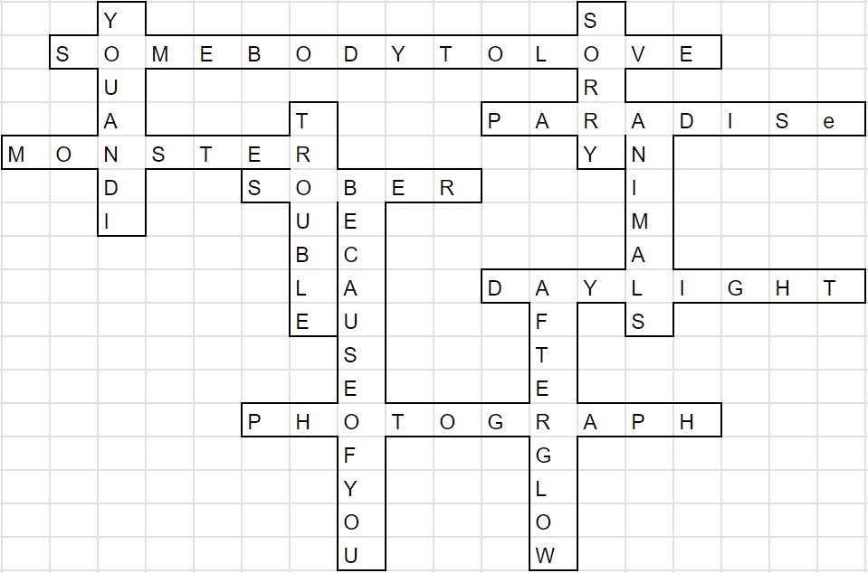

Solution: Songs
Answer: GOLDEN
Written by Jonathan
The first thing to do is to ID songs. Some of these are immediately recognizable, such as Somebody to Love from Queen or Photograph by Ed Sheeran. If you have a Taylor Swift fan on your team, those should be immediately recognizable as well. We took the line with the first (for the most part) instance of the song title in the lyrics, and removed just the song title, so some of the titles might be guessable that way too. After getting some of these songs, solvers should get the aha that each artist has 2 songs, both of which share the same song title as another artist, forming a chain. That should help with Googling the songs that have not been identified until this point, using links such as this or this. Having the artists in alphabetical order, as well as having the grid with clear enums should help as well.
The full list of songs is:
Coldplay: Animals, Paradise
Ed Sheeran: Afterglow, Photograph
Imagine Dragons: Monster, Trouble
Justin Bieber: Somebody to Love, Sorry
Kelly Clarkson: Because of you, Sober
Lady Gaga: Monster, You and I
Madonna: Paradise, Sorry
Maroon 5: Animals, Daylight
Nickelback: Because of you, Photograph
Pink: Sober, Trouble
Queen: Somebody to Love, You and I
Taylor Swift: Afterglow, Daylight
Now that we have our songs, we can fill in the grid, that should look like the following.

Reading off the cluephrase, we get SWIFT COLOR OF LOVE. In the Taylor Swift song Daylight, she describes the color of love as GOLDEN.
Author's Notes
I wanted this puzzle to feel fair for any team that hadn’t heard of any of these songs, so the obvious ones are googlable just from the lyrics that are played, while the hardest ones are meant to be gotten from research. Music puzzles where music is actually played is just so tough to balance because there’s a huge disparity in knowledge, but hopefully the balance was right, even for solvers who have not heard many of these songs before. I chose songs that are in general very popular, and pretty much all of these songs should be ID-able just from hearing if you are a fan of the artist. I had the person who suggested the songs in Sea Cave in Puzzle Rojak 1 try this puzzle and she got almost all the songs directly. I would have liked the grid not to be provided at all, but it was too difficult. This compromise hopefully forced teams to need the linking of artists and songs to finish, while giving sufficient entry points to the chain. The inspiration for this puzzle came from knowing Daylight was both a Taylor Swift and a Maroon 5 song, and investigating how many other song titles shared this same property.